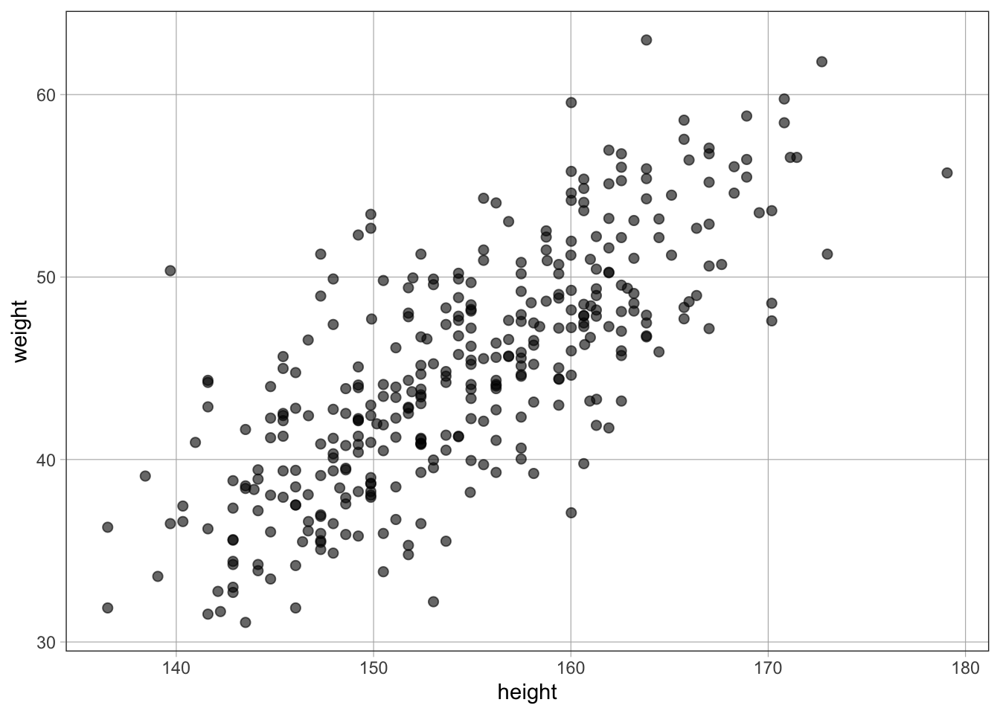
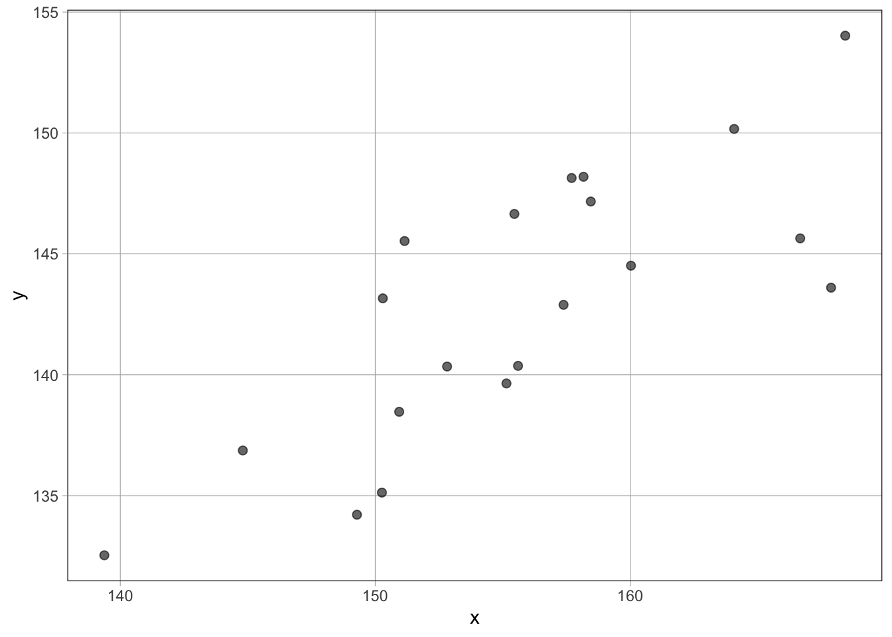
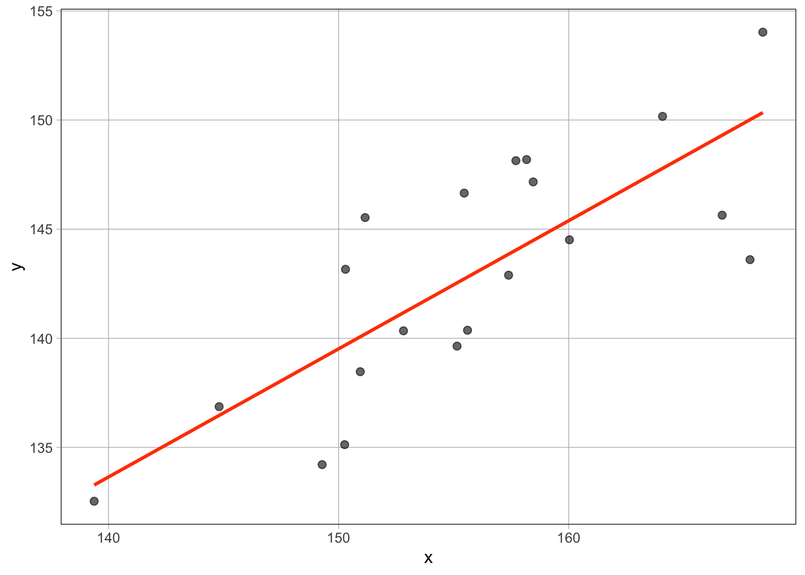
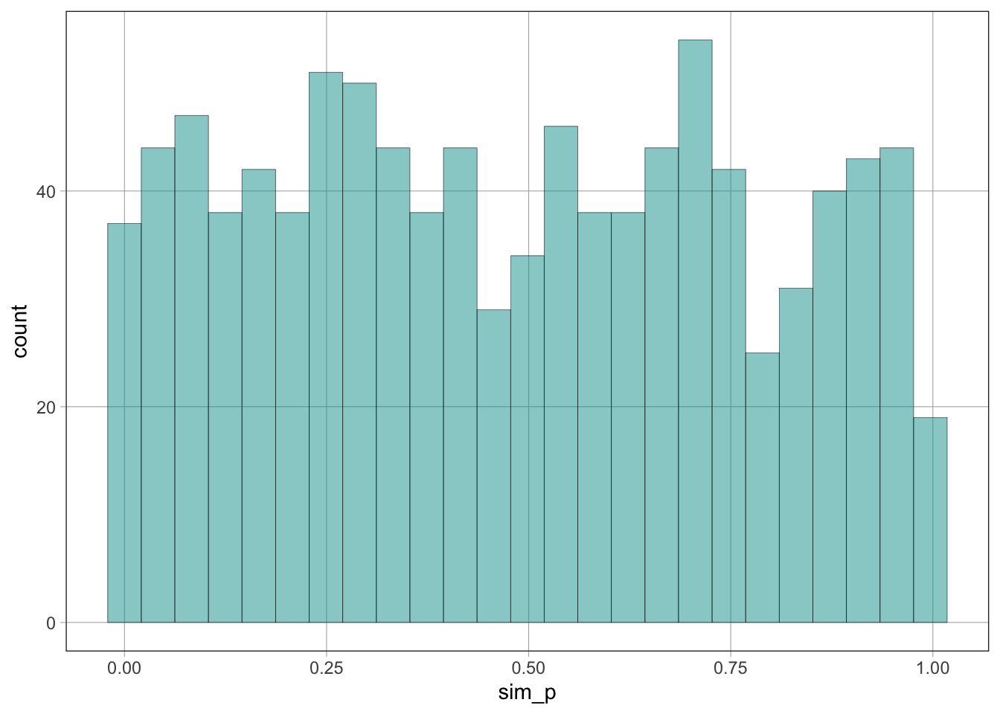
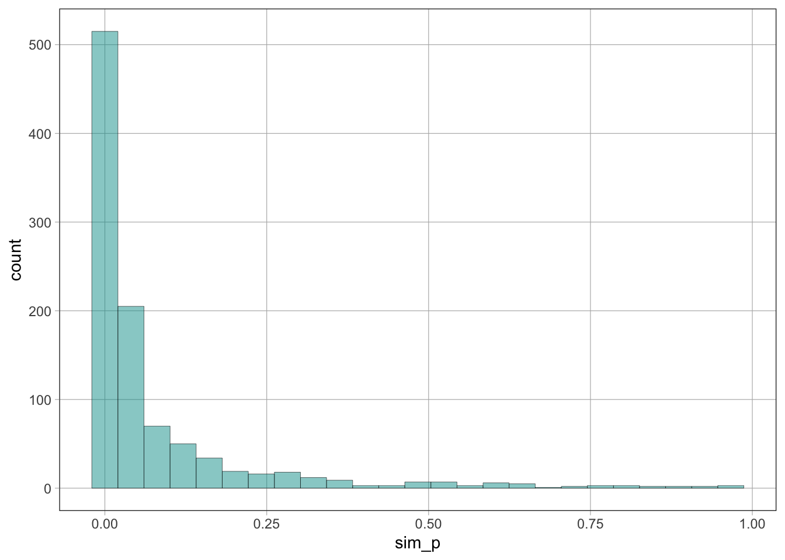
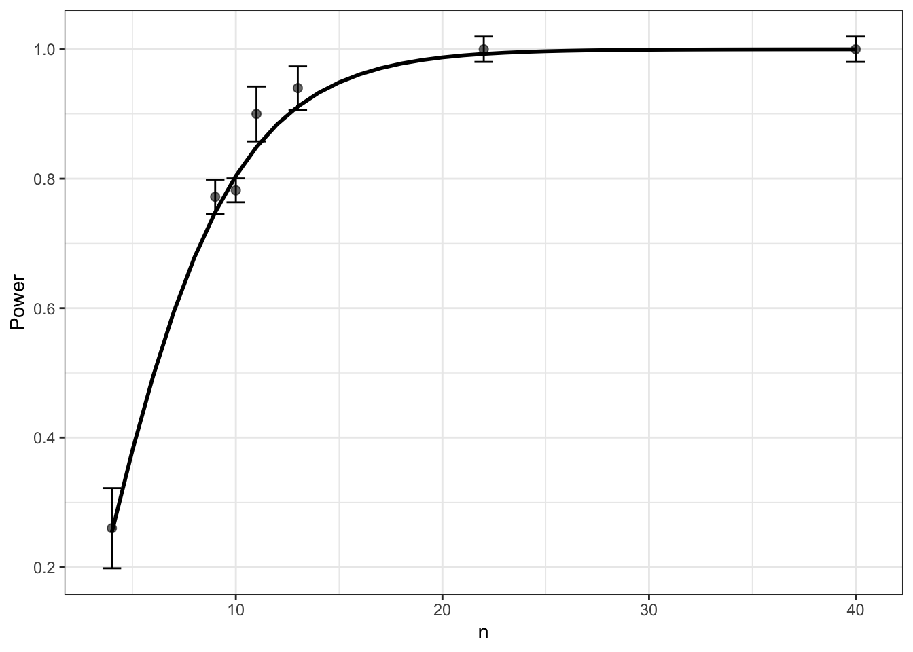

library(tidyverse)
library(coursekata)
library(readxl)
library(performance)
library(parameters)
library(effectsize)
library(ggeffects)
library(mlpwr)
set.seed(123)
options(scipen = 0, ggeffects_margin = "empirical")Power analysis using Monte Carlo simulations in R
Setup environment
Pilot study
Suppose we ran a pilot study to investigate the “effect” of height on weight in adult individuals from the Kalahari region in Africa (data from the rethinking package)
data(Howell1, package = "rethinking")
d1 <- Howell1 %>% filter(age >= 18)
head(d1)| height | weight | age | male |
|---|---|---|---|
| 151.8 | 47.83 | 63 | 1 |
| 139.7 | 36.49 | 63 | 0 |
| 136.5 | 31.86 | 65 | 0 |
| 156.8 | 53.04 | 41 | 1 |
| 145.4 | 41.28 | 51 | 0 |
| 163.8 | 62.99 | 35 | 1 |
favstats(~ weight, data = d1)| min | Q1 | median | Q3 | max | mean | sd | n | missing | |
|---|---|---|---|---|---|---|---|---|---|
| 31.07 | 40.26 | 44.79 | 49.29 | 62.99 | 44.99 | 6.457 | 352 | 0 |
favstats(~ height, data = d1)| min | Q1 | median | Q3 | max | mean | sd | n | missing | |
|---|---|---|---|---|---|---|---|---|---|
| 136.5 | 148.6 | 154.3 | 160.7 | 179.1 | 154.6 | 7.742 | 352 | 0 |
gf_point(weight ~ height, data = d1)
m <- lm(weight ~ height, data = d1 %>% mutate(height = height - mean(height)))
summary(m)
Call:
lm(formula = weight ~ height, data = d1 %>% mutate(height = height -
mean(height)))
Residuals:
Min 1Q Median 3Q Max
-11.802 -3.018 -0.229 2.812 14.735
Coefficients:
Estimate Std. Error t value Pr(>|t|)
(Intercept) 44.9905 0.2261 199.0 <2e-16 ***
height 0.6294 0.0292 21.5 <2e-16 ***
---
Signif. codes: 0 '***' 0.001 '**' 0.01 '*' 0.05 '.' 0.1 ' ' 1
Residual standard error: 4.24 on 350 degrees of freedom
Multiple R-squared: 0.57, Adjusted R-squared: 0.568
F-statistic: 463 on 1 and 350 DF, p-value: <2e-16meanx = 154.6
sdx = 7.742
beta0 = 44.99
beta1 = 0.63
sde = 4.24
Generative model to simulate data
The likelihood of the general linear model:
\[ y_i \stackrel{\text{i.i.d.}} \sim \text{Normal}(\mu = \beta_0 + \beta_1 x_i, \sigma) \]
or (equivalently):
\[ y_i = \beta_0 + \beta_1 x_i + \epsilon_i \]
\[ \epsilon_i \stackrel{\text{i.i.d.}} \sim \text{Normal}(0, \sigma) \]
sim_d <- function(n, meanx, sdx, beta0, beta1, sde) {
x <- rnorm(n, meanx, sdx)
e <- rnorm(n, 0, sde)
y <- beta0 + beta1 * x + e
return(tibble(x, y))
}d <- sim_d(n = 20, meanx = 154.6, sdx = 7.742, beta0 = 44.99, beta1 = 0.63, sde = 4.24)gf_point(y ~ x, data = d)
Inference model for significance test
m <- lm(y ~ x, data = d)
model_parameters(m)| Parameter | Coefficient | SE | CI | CI_low | CI_high | t | df_error | p |
|---|---|---|---|---|---|---|---|---|
| (Intercept) | 51.4461 | 17.0956 | 0.95 | 15.5295 | 87.3627 | 3.009 | 18 | 0.0075 |
| x | 0.5871 | 0.1097 | 0.95 | 0.3567 | 0.8176 | 5.353 | 18 | 0.0000 |
p(m)[1] 4.35e-05gf_point(y ~ x, data = d) %>% gf_model(m, color = "orangered")
Monte Carlo simulation (null hypothesis)
m = 1000 # number of Monte Carlo simulations
n = 8 # sample size
sim_p <- function(n) {
# simulate data using parameter estimates from model fitted to pilot data except b1 = 0
d <- sim_d(n, meanx = 154.6, sdx = 7.742, beta0 = 44.99, beta1 = 0, sde = 4.24)
m <- lm(y ~ x, data = d)
# or resample and shuffle pilot data
d <- resample(d1, size = n)
m <- lm(shuffle(weight) ~ height, data = d)
# return the p-value of the significance test
p(m)
}
sim_ps <- do(m) * sim_p(n)gf_histogram(~ sim_p, data = sim_ps)
mean(sim_ps < 0.05) # alpha = type I error rate[1] 0.068Monte Carlo simulation of p-values (alternative hypothesis)
m = 1000 # number of Monte Carlo simulations
n = 8 # sample size
sim_p <- function(n) {
# simulate data using parameter estimates from model fitted to pilot data
d <- sim_d(n, meanx = 154.6, sdx = 7.742, beta0 = 44.99, beta1 = 0.63, sde = 4.24)
m <- lm(y ~ x, data = d)
# or resample pilot data
d <- resample(d1, size = n)
m <- lm(weight ~ height, data = d)
# return the p-value of the significance test
p(m)
}
sim_ps <- do(m) * sim_p(n)gf_histogram(~ sim_p, data = sim_ps)
mean(sim_ps < 0.05) # power = 1 - beta (beta = type II error rate)[1] 0.682ds <- find.design(\(n) sim_p(n) <= 0.05, # alpha level
boundaries = c(4, 40), # boundaries of sample size space to explore
power = 0.80, # power level (1 - beta)
evaluations = m) # number of Monte Carlo simulations
Updates: 1, Evaluations: 250, Time: 1
Updates: 2, Evaluations: 300, Time: 1.2
Updates: 3, Evaluations: 350, Time: 1.4
Updates: 4, Evaluations: 400, Time: 1.6
Updates: 5, Evaluations: 450, Time: 1.8
Updates: 6, Evaluations: 500, Time: 2
Updates: 7, Evaluations: 550, Time: 2.2
Updates: 8, Evaluations: 600, Time: 2.4
Updates: 9, Evaluations: 650, Time: 2.6
Updates: 10, Evaluations: 700, Time: 2.8
Updates: 11, Evaluations: 750, Time: 3
Updates: 12, Evaluations: 800, Time: 3.2
Updates: 13, Evaluations: 850, Time: 3.4
Updates: 14, Evaluations: 900, Time: 3.6
Updates: 15, Evaluations: 950, Time: 3.8
Updates: 16, Evaluations: 1000, Time: 4summary(ds)
Call:
find.design(simfun = function(n) sim_p(n) <= 0.05, boundaries = c(4,
40), power = 0.8, evaluations = m)
Design: n = 10
Power: 0.80416, SE: 0.01466
Evaluations: 1000, Time: 4, Updates: 16
Surrogate: Logistic regressionplot(ds, addribbon = FALSE, adderrorbars = TRUE)
Print environment
sessioninfo::session_info()─ Session info ───────────────────────────────────────────────────────────────
setting value
version R version 4.3.3 (2024-02-29)
os macOS Sonoma 14.4
system aarch64, darwin20
ui X11
language (EN)
collate en_US.UTF-8
ctype en_US.UTF-8
tz America/New_York
date 2024-03-21
pandoc 3.1.12.3 @ /opt/homebrew/bin/ (via rmarkdown)
─ Packages ───────────────────────────────────────────────────────────────────
package * version date (UTC) lib source
bayestestR 0.13.2 2024-02-12 [1] CRAN (R 4.3.1)
callr 3.7.5 2024-02-19 [1] CRAN (R 4.3.1)
cellranger 1.1.0 2016-07-27 [1] CRAN (R 4.3.0)
cli 3.6.2 2023-12-11 [1] CRAN (R 4.3.1)
coda 0.19-4.1 2024-01-31 [1] CRAN (R 4.3.1)
codetools 0.2-19 2023-02-01 [1] CRAN (R 4.3.3)
colorspace 2.1-0 2023-01-23 [1] CRAN (R 4.3.0)
coursekata * 0.15.0 2023-12-14 [1] CRAN (R 4.3.1)
datawizard 0.9.1 2023-12-21 [1] CRAN (R 4.3.1)
DiceKriging 1.6.0 2021-02-23 [1] CRAN (R 4.3.0)
digest 0.6.35 2024-03-11 [1] CRAN (R 4.3.1)
dplyr * 1.1.4 2023-11-17 [1] CRAN (R 4.3.1)
dslabs * 0.8.0 2024-03-01 [1] CRAN (R 4.3.1)
effectsize * 0.8.6 2023-09-14 [1] CRAN (R 4.3.0)
emmeans 1.10.0 2024-01-23 [1] CRAN (R 4.3.1)
estimability 1.5 2024-02-20 [1] CRAN (R 4.3.1)
evaluate 0.23 2023-11-01 [1] CRAN (R 4.3.1)
fansi 1.0.6 2023-12-08 [1] CRAN (R 4.3.1)
farver 2.1.1 2022-07-06 [1] CRAN (R 4.3.0)
fastmap 1.1.1 2023-02-24 [1] CRAN (R 4.3.0)
fivethirtyeight * 0.6.2 2021-10-07 [1] CRAN (R 4.3.0)
fivethirtyeightdata * 0.1.0 2024-01-06 [1] Github (fivethirtyeightdata/fivethirtyeightdata@8de5de4)
forcats * 1.0.0 2023-01-29 [1] CRAN (R 4.3.0)
generics 0.1.3 2022-07-05 [1] CRAN (R 4.3.0)
ggeffects * 1.5.0.6 2024-03-15 [1] https://strengejacke.r-universe.dev (R 4.3.3)
ggformula * 0.12.0 2023-11-09 [1] CRAN (R 4.3.1)
ggplot2 * 3.5.0 2024-02-23 [1] CRAN (R 4.3.1)
ggridges 0.5.6 2024-01-23 [1] CRAN (R 4.3.1)
glue 1.7.0 2024-01-09 [1] CRAN (R 4.3.1)
gtable 0.3.4 2023-08-21 [1] CRAN (R 4.3.0)
haven 2.5.4 2023-11-30 [1] CRAN (R 4.3.1)
hms 1.1.3 2023-03-21 [1] CRAN (R 4.3.0)
htmltools 0.5.7 2023-11-03 [1] CRAN (R 4.3.1)
htmlwidgets 1.6.4 2023-12-06 [1] CRAN (R 4.3.1)
insight 0.19.9 2024-03-15 [1] CRAN (R 4.3.1)
jsonlite 1.8.8 2023-12-04 [1] CRAN (R 4.3.1)
knitr 1.45 2023-10-30 [1] CRAN (R 4.3.1)
labeling 0.4.3 2023-08-29 [1] CRAN (R 4.3.0)
labelled 2.12.0 2023-06-21 [1] CRAN (R 4.3.0)
lattice * 0.22-5 2023-10-24 [1] CRAN (R 4.3.3)
lifecycle 1.0.4 2023-11-07 [1] CRAN (R 4.3.1)
Lock5withR * 1.2.2 2015-12-22 [1] CRAN (R 4.3.0)
lsr * 0.5.2 2021-12-01 [1] CRAN (R 4.3.0)
lubridate * 1.9.3 2023-09-27 [1] CRAN (R 4.3.1)
magrittr 2.0.3 2022-03-30 [1] CRAN (R 4.3.0)
MASS 7.3-60.0.1 2024-01-13 [1] CRAN (R 4.3.3)
Matrix * 1.6-5 2024-01-11 [1] CRAN (R 4.3.3)
Metrics * 0.1.4 2018-07-09 [1] CRAN (R 4.3.0)
mlpwr * 1.1.0 2023-08-07 [1] CRAN (R 4.3.0)
mosaic * 1.9.1 2024-02-23 [1] CRAN (R 4.3.1)
mosaicCore 0.9.4.0 2023-11-05 [1] CRAN (R 4.3.1)
mosaicData * 0.20.4 2023-11-05 [1] CRAN (R 4.3.1)
multcomp 1.4-25 2023-06-20 [1] CRAN (R 4.3.0)
munsell 0.5.0 2018-06-12 [1] CRAN (R 4.3.0)
mvtnorm 1.2-4 2023-11-27 [1] CRAN (R 4.3.1)
pak 0.7.2 2024-03-17 [1] CRAN (R 4.3.1)
palmerpenguins 0.1.1 2022-08-15 [1] CRAN (R 4.3.0)
parameters * 0.21.6 2024-03-18 [1] CRAN (R 4.3.1)
performance * 0.10.9 2024-02-17 [1] CRAN (R 4.3.1)
pillar 1.9.0 2023-03-22 [1] CRAN (R 4.3.0)
pkgconfig 2.0.3 2019-09-22 [1] CRAN (R 4.3.0)
processx 3.8.4 2024-03-16 [1] CRAN (R 4.3.1)
ps 1.7.6 2024-01-18 [1] CRAN (R 4.3.1)
purrr * 1.0.2 2023-08-10 [1] CRAN (R 4.3.0)
R6 2.5.1 2021-08-19 [1] CRAN (R 4.3.0)
randtoolbox 2.0.4 2023-01-28 [1] CRAN (R 4.3.0)
readr * 2.1.5 2024-01-10 [1] CRAN (R 4.3.1)
readxl * 1.4.3 2023-07-06 [1] CRAN (R 4.3.0)
rgenoud 5.9-0.10 2023-12-15 [1] CRAN (R 4.3.1)
rlang 1.1.3 2024-01-10 [1] CRAN (R 4.3.1)
rmarkdown 2.26 2024-03-05 [1] CRAN (R 4.3.1)
rngWELL 0.10-9 2023-01-16 [1] CRAN (R 4.3.0)
rstudioapi 0.15.0 2023-07-07 [1] CRAN (R 4.3.0)
sandwich 3.1-0 2023-12-11 [1] CRAN (R 4.3.1)
scales 1.3.0 2023-11-28 [1] CRAN (R 4.3.1)
sessioninfo 1.2.2 2021-12-06 [1] CRAN (R 4.3.0)
stringi 1.8.3 2023-12-11 [1] CRAN (R 4.3.1)
stringr * 1.5.1 2023-11-14 [1] CRAN (R 4.3.1)
supernova * 3.0.0 2024-02-07 [1] CRAN (R 4.3.1)
survival 3.5-8 2024-02-14 [1] CRAN (R 4.3.3)
TH.data 1.1-2 2023-04-17 [1] CRAN (R 4.3.0)
tibble * 3.2.1 2023-03-20 [1] CRAN (R 4.3.0)
tidyr * 1.3.1 2024-01-24 [1] CRAN (R 4.3.1)
tidyselect 1.2.1 2024-03-11 [1] CRAN (R 4.3.1)
tidyverse * 2.0.0 2023-02-22 [1] CRAN (R 4.3.0)
timechange 0.3.0 2024-01-18 [1] CRAN (R 4.3.1)
tzdb 0.4.0 2023-05-12 [1] CRAN (R 4.3.0)
utf8 1.2.4 2023-10-22 [1] CRAN (R 4.3.1)
vctrs 0.6.5 2023-12-01 [1] CRAN (R 4.3.1)
withr 3.0.0 2024-01-16 [1] CRAN (R 4.3.1)
xfun 0.42 2024-02-08 [1] CRAN (R 4.3.1)
xtable 1.8-4 2019-04-21 [1] CRAN (R 4.3.0)
yaml 2.3.8 2023-12-11 [1] CRAN (R 4.3.1)
zoo 1.8-12 2023-04-13 [1] CRAN (R 4.3.0)
[1] /Library/Frameworks/R.framework/Versions/4.3-arm64/Resources/library
──────────────────────────────────────────────────────────────────────────────